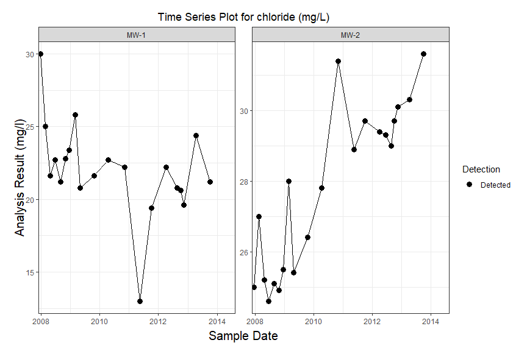
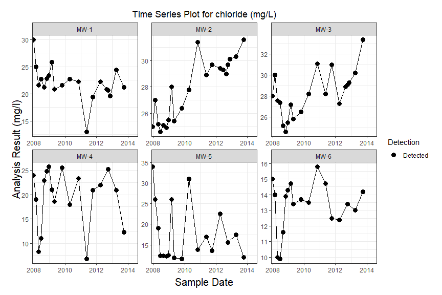
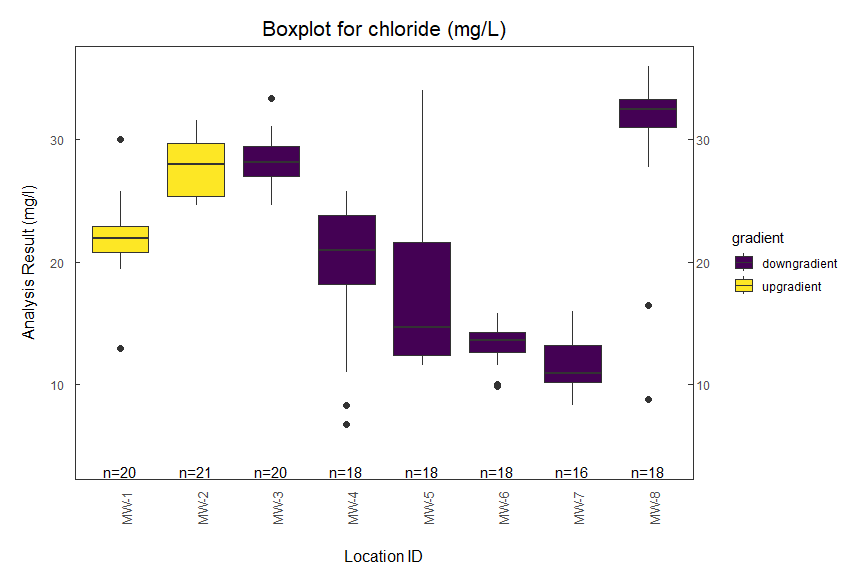
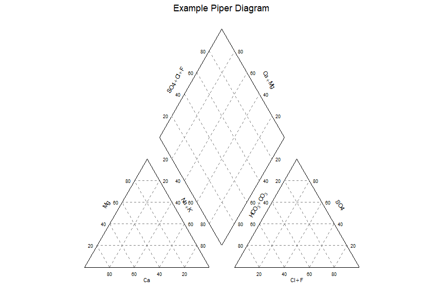

Overview
manager provides a standardized workflow for environmental data analysis in R.
The package centers around the env_schema class, a standardized environmental data model built on top of tidy data principles. Once data have been converted to env_schema, they can be analyzed, summarized, visualized, and reported using a consistent workflow.
Key features include:
- Standardized environmental data structure (
env_schema) - Native compatibility with dplyr and the tidyverse
- Time-series, boxplot, Piper, and spatial visualizations
- Summary statistics and reporting utilities
- Importers for MANAGES databases
Why manager?
Environmental datasets are often distributed across spreadsheets, laboratory reports, groundwater databases, and regulatory exports. manager provides a common data model(env_schema) that allows the same analysis and plotting tools to work across data sources without rewriting workflows for each project.
Installation
Install the development version from GitHub:
install.packages("remotes")
remotes::install_github("jentjr/manager")Quick Start
library(dplyr)
#>
#> Attaching package: 'dplyr'
#> The following objects are masked from 'package:stats':
#>
#> filter, lag
#> The following objects are masked from 'package:base':
#>
#> intersect, setdiff, setequal, union
library(manager)
data(gw)
gw %>%
filter(location_id == "MW-1",
.analyte == "Chloride") %>%
stats_summary()
#> # A tibble: 1 × 26
#> location_id param_name .analysis_unit n n_used n_detect percent_censored
#> <chr> <chr> <chr> <int> <int> <int> <dbl>
#> 1 MW-1 Chloride, t… mg/l 20 20 20 0
#> # ℹ 19 more variables: mean <dbl>, median <dbl>, sd <dbl>, var <dbl>,
#> # min <dbl>, max <dbl>, cv <dbl>, `25%` <dbl>, `75%` <dbl>, IQR <dbl>,
#> # mad <dbl>, censoring_class <chr>, distribution_method <chr>,
#> # trend_method <chr>, trend_guidance <chr>, censored_method <chr>,
#> # distribution_config <list>, interval_config <list>, decision_basis <chr>Environmental Data Standard
Datasets in manager use the env_schema class:
gw
#> <env_schema>
#> 5878 rows x 44 columns
#> Locations: 8
#> Analytes: 49
#> Valid: TRUE
#> Version: 0.5.0Core environmental variables include:
- location
- analyte
- result
- date
Additional metadata such as units, qualifiers, detection limits, coordinates, sample identifiers, and analytical methods can also be stored and preserved by the schema.
Import Data
gw <- read_manages3("Site.mdb")
gw <- read_manages4(
server = "MY_MANAGES_SERVER",
database = "MY_MANAGES_DATABASE",
site = "MY_SITE"
)Visualize Data
# load example data and plot time series of selected wells and constituents
data("gw")
wells <- c("MW-1", "MW-2", "MW-3", "MW-4", "MW-5", "MW-6")
params <- c("Arsenic, dissolved",
"Chloride, total"
)
gw %>%
filter(location_id %in% wells, param_name %in% params) %>%
series_plot()

# create boxplots filled by gradient
gw %>%
filter(param_name == "Chloride, total",
location_id %in% c("MW-1", "MW-2", "MW-3", "MW-4", "MW-5", "MW-6", "MW-7", "MW-8")) %>%
mutate(gradient = if_else(location_id %in% wells, "upgradient", "downgradient")) %>%
boxplot(fill = "gradient")
Piper Diagrams and more…
gw %>%
piper_plot(
x_cation = "Calcium, dissolved",
y_cation = "Magnesium, dissolved",
z_cation = c("Sodium, dissolved", "Potassium, dissolved"),
x_anion = c("Chloride, total", "Fluoride, total"),
x_anion_label = "Cl + F",
y_anion = "Alkalinity, total (lab)",
z_anion = "Sulfate, total",
title = "Example Piper Diagram"
)